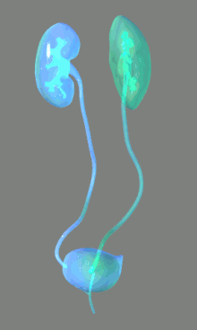

APPARATO URINARIO
L'apparato urinario è l'insieme di organi e di strutture finalizzati all'escrezione dell'urina o di altri prodotti del catabolismo in alcuni taxa animali, principalmente appartenenti ai cordati. Appartiene alla più vasta categoria degli apparati escretori animali, differenti per anatomia e fisiologia da gruppo a gruppo.
Come in tutti i mammiferi l'ammoniaca, presente in forma protonata come ione ammonio, viene convertita in urea tramite il già citato ciclo dell'urea o dell'ornitina citrullina, che permette, a fronte d'una spesa energetica di due molecole di ATP per ogni molecola di urea prodotta, di disporre di un composto meno tossico rispetto a quello di partenza. L'escrezione di questa e altre molecole viene attuata dai nefroni, principali attuatori dell'apparato urinario.
